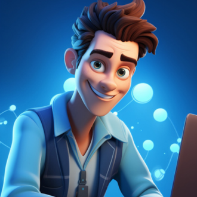
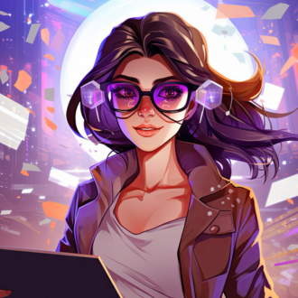
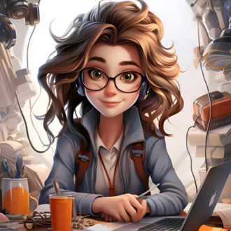
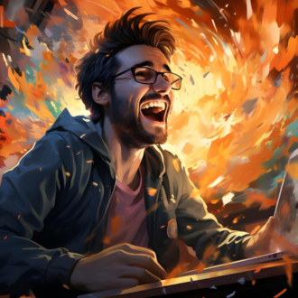
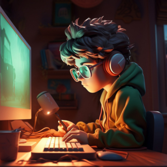

-
Mônica

Descrição
Mônica é a responsável pela equipe. Sua maneira de pensar e agir a tornou muito competente para este cargo. Ela não brinca em serviço e realiza tudo o que for necessário para cumprir com o prazo dos projetos. Lidera com maestria, sempre respeitando a opinião de seus colegas.
-
Roberty
Descrição
Muito atencioso e sempre bem carismático Roberty é o segundo em comando. Ele sempre mantém seu trabalho em ordem como também sua mesa. Está disposto a ajudar, principalmente se as coisas estiverem fora de controle. Ele ama o que faz.
-
Margaretti
Descrição
Ela é irmã mais velha de Lorette. Aprendeu a programar e com muita dificuldade entrou na equipe. Margaretti prefere estar por trás dos projetos sempre preocupada em cada detalhe dos códigos. Ela sempre se esforça muito para ser mais rápida possível para não atrasar seus colegas, apesar dela não ser muito sociável.
-
Lorette
Descrição
Lorette é um ano mais nova que Margaretti. Através de sua irmã, ela entrou na equipe. Sempre de muito bom humor, é amigável com todos. Gosta da programação onde trabalha feliz no Frontend dos sites. Ela se diverte embelezando e finalizando o trabalho que sua irmã inicia.
-
Jhoseph
Descrição
Jhoseph vem para trazer alegria a todos em seu redor. Seu ótimo humor contagia a equipe principalmente quando estão todos tensos com seus trabalhos. Às vezes é necessário a líder chamar sua atenção pela falta de concentração nos projetos. Ele é essencial para a equipe na área de jogos.
-
Juca
Descrição
Juca é o mais novo da equipe em idade, porém sua competência é surpreendente. Tem uma capacidade de aprendizado maior que a maioria das pessoas de sua idade. Ele gosta muito de desenvolve aplicativos para celular. Sempre concentrado, não brinca em serviço.